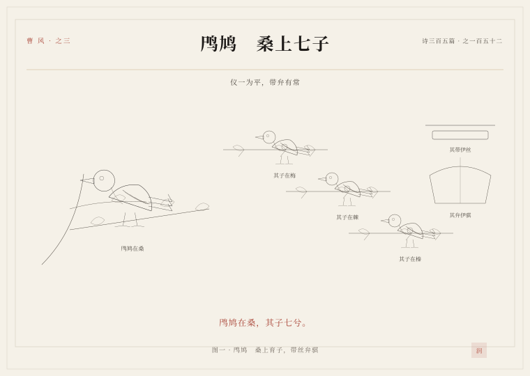
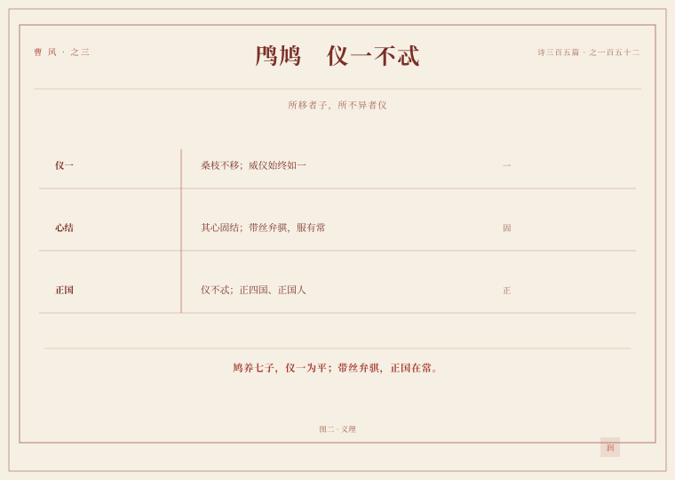

第一百五十二篇 鸤鸠
曹风 · 之三 SJ152
朗读 · 普通话
依经文原文朗读，章次不读出；配古琴底乐，不改速、不加拖腔。全库同一音色（豆包 TTS），非播音员录制。
一 解题
诗三判：
- 谁在说：曹国之人。美一「淑人君子」，以其仪始终如一、心如结而固，带弁有常，能正四国、正国人。
- 说什么事：四章以鸤鸠养七子起兴，子移于梅、棘、榛，而母在桑不移；所移者子，所不异者仪。
末章祝以「胡不万年」。
- 为何编在此：曹风第三篇。前二篇刺奢、刺小人，此篇独美君子；一国将亡，犹存一「仪」可为正。
《毛序》：「《鸤鸠》，刺不壹也。在位无君子，用心之不壹也。」
朱子《诗集传》：「兴也。鸤鸠，秸鞠也，一名戴胜；其子七，喻所育之众也。淑人君子，其仪一兮，言其威仪始终如一也。心如结，言其心固而不解也。」二章：「带，大带也；弁，皮弁也；骐，马之青骊者，弁之色如之。」三章：「忒，差也。」四章：「正，犹正也；万年，祝其寿也。」
本库的看法：《鸤鸠》是一首把「仪」写成一条不移之桑枝的诗。
毛序说「刺不壹」，朱子说「美君子」，一刺一美，其实同指：所美者仪一，所刺者不壹。
须辨：鸤鸠是秸鞠、戴胜一类，不是斑鸠；其子七是喻所育之众，不是实数七子；「仪一」是威仪始终如一，不是「一」字之数；「心如结」是心固不解，不是心打结；「带伊丝」「弁伊骐」是带、弁有制，不是丝带、骐马。诗以鸟之育子起兴，落点在人之仪。
断语：鸠养七子，仪一为平；带丝弁骐，正国在常。
先辨五事：「鸤鸠」是秸鞠、戴胜一类，不是斑鸠；「其子七」是喻众，不是实七；「仪一」是威仪如一，不是数量之一；「结」是固，不是打结；「骐」是弁色如青骊，不是骐马。
二 经文
第一章
鸤鸠在桑，其子七兮。
淑人君子，其仪一兮。
其仪一兮，心如结兮。
第二章
鸤鸠在桑，其子在梅。
淑人君子，其带伊丝。
其带伊丝，其弁伊骐。
第三章
鸤鸠在桑，其子在棘。
淑人君子，其仪不忒。
其仪不忒，正是四国。
第四章
鸤鸠在桑，其子在榛。
淑人君子，正是国人。
正是国人，胡不万年。
三 韵读
- 一章：七、一、结，质部相叶。入声短，声固。
- 二章：梅、丝、骐，之、脂、支旁转。声细而有制。
- 三章：棘、忒、国，职部相叶。入声硬，声正。
- 四章：榛、人、年，真部相叶。声开而长，收于祝。
读法：三章入声，一章一结；末章转真，声开而寿；仪愈固，声愈正，祝愈长。
四 字义与名物
- 鸤鸠：秸鞠、戴胜一类；朱子谓其养子均平。桑：所栖之木。其子七：喻所育之众。
- 淑人君子：善人君子。仪：威仪。一：始终如一。结：固。
- 梅、棘、榛：所移之木。带：大带。伊：是。丝：丝带。弁：皮弁。骐：青骊色，弁色如之。
- 忒：差。正：正之。四国：四方之国。胡：何。万年：祝寿。
五 今译
一章：鸤鸠在桑树上，它的雏子众多。善人君子，他的威仪始终如一。威仪如一，他的心坚固如结。
二章：鸤鸠在桑树上，雏子已在梅树。善人君子，他的大带是丝制。丝制大带，他的皮弁色如青骊。
三章：鸤鸠在桑树上，雏子已在棘树。善人君子，他的威仪没有差失。威仪无差，可以正四方之国。
四章：鸤鸠在桑树上，雏子已在榛树。善人君子，可以正一国之人。正一国之人，何不祝他万年。
六 章旨
- 一章：鸠在桑不移，子七而育均；兴君子仪一、心如结。所一者仪，所固者心。
- 二章：子在梅，母仍在桑；兴君子带丝、弁骐。服饰有制，威仪有常。
- 三章：子在棘，仪不忒；兴君子正四国。仪一而后能正，不正己而正人者无之。
- 四章：子在榛，正国人；祝以万年。美之至，祝之至；非谀，是望。
七 诗教
- 仪一是根本：威仪不如一，则朝三暮四；一者，不随子之移而移。
- 服制是仪之形：带丝、弁骐，皆有常；常服不僭，常仪不失。
- 正国先正身：能正四国、正国人，先从其仪一始；诗之美，正是诗之刺。
八 分寸与边界
- 不把「鸤鸠」读成斑鸠：鸤鸠是秸鞠、戴胜一类；认错鸟，则「养子均平」之义失。
- 不把「其子七」读成实数：七喻众，不是七子；读成实数，则兴义狭。
- 不把「仪一」读成数量：仪一是威仪如一，不是「一个仪」；读成数量，则「不忒」无着。
- 不把「万年」读成谀辞：祝寿是望其长久为正，不是阿谀；读成谀，则诗之刺失。
九 存疑
- 诗旨：毛序「刺不壹」，朱子「美君子」。本库从毛朱，以仪一为骨，美刺并用。
- 「鸤鸠」：毛传「秸鞠」，朱子「秸鞠，一名戴胜」；今名布谷、戴胜之争。从朱子一类，不指实一种。
- 「其子七」：一说七子，一说喻众。从喻众。
- 「骐」：一说弁色如青骊，一说骐为马。从弁色。
十 跨典
- 《礼记·少仪》「君子之容舒迟，见所尊者齐遫」；此篇「其仪一」，正是容仪之常。
- 《论语》「其身正，不令而行」；此篇「正是四国」，正身而后正人。
- 《曹风》四篇，唯此篇美；美一君子，正见其余无君子。
十一 双卡与图
六对：
| 鸤鸠（秸鞠、戴胜一类） |
鸤鸠（斑鸠） |
| 其子七（喻众） |
其子七（实七子） |
| 仪一（威仪如一） |
仪一（数量之一） |
| 结（固） |
结（打结） |
| 骐（弁色如青骊） |
骐（骐马） |
| 万年（祝寿） |
万年（谀辞） |

图一 · 鸤鸠 桑上七子，带丝弁骐

图二 · 鸤鸠 仪一不忒，正国在常